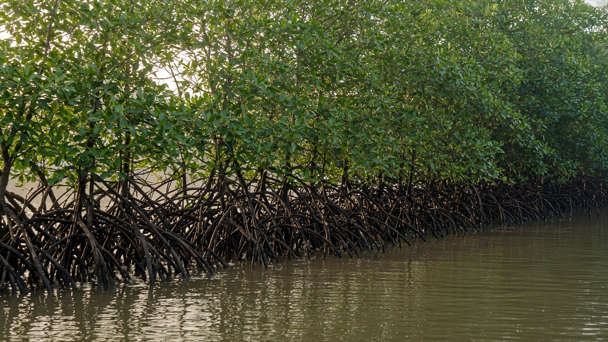
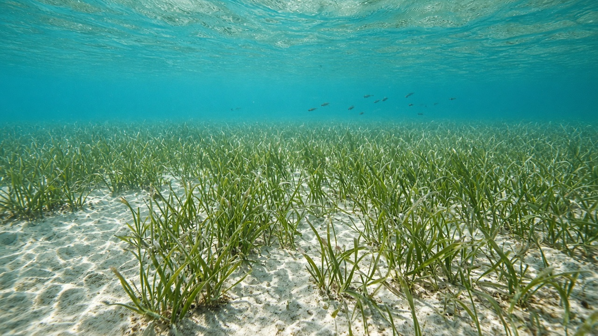
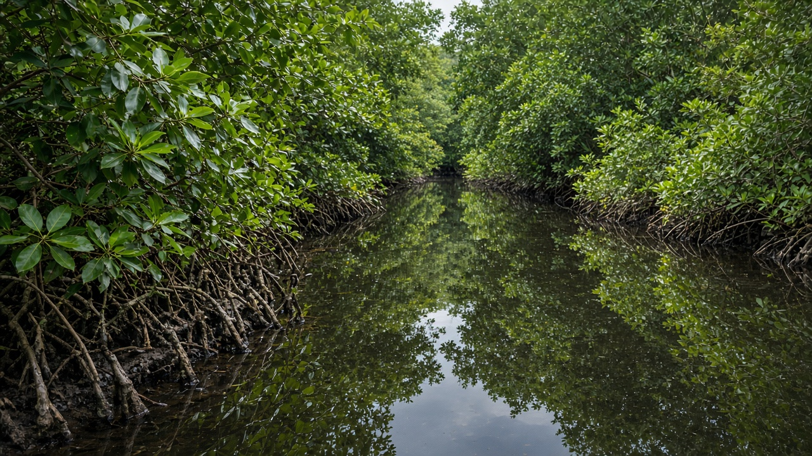

Mangroves, Seagrass, and Coastal Nurseries
Published on August 20, 2026

Mangrove forests and seagrass meadows are the nurseries of many tropical and subtropical coasts. Tangled prop roots and pneumatophores slow tidal water, trap fine sediment, and give juvenile shrimp, crabs, and fish a maze of hiding places from larger predators. Seagrasses—true flowering plants that live fully submerged—stabilize sand with rhizomes, oxygenate sediments, and feed dugongs, green turtles, and countless invertebrates. Together these habitats form a conveyor: larvae settle in seagrass or mangrove creeks, grow through vulnerable months, then move to reefs, estuaries, or the open shelf as adults.
The nursery function is measurable in catch. Studies on coasts around the Bay of Bengal and Southeast Asia show that nearshore fish and shrimp landings often collapse after mangrove clearing for ponds, ports, or urban fill, even when offshore boats still operate. Seagrass loss from propeller scars, dredging, and cloudy water reduces the area where small fish can hide and graze. These systems also store carbon in waterlogged soils and blunt storm waves, so their value is not only as fish factories. Unlike inland freshwater wetlands, mangrove and seagrass nurseries are keyed to salinity gradients and tidal flooding; restoring them means restoring hydrology and sediment supply, not only planting seedlings on a map.
Coastal planning succeeds when nursery habitats are treated as infrastructure for fisheries and disaster reduction. Buffer zones that keep shrimp farms and roads out of the seaward mangrove fringe, no-wake rules over seagrass beds, and community patrols against illegal cutting all have documented returns in juvenile recruitment. Students in landlocked countries still benefit from this science because Himalayan rivers deliver the sediment and freshwater that build deltas where mangroves stand, including the Sundarbans at the mouth of the Ganga–Brahmaputra–Meghna system. Protecting distant nurseries therefore starts with how catchments are farmed, dammed, and drained far upstream.

म्यानग्रोभ वन र समुद्री घाँस मैदान धेरै उष्ण र उपोष्ण तटका नर्सरी हुन्। गुजुल्टिएका आधार जरा र श्वासजरा ज्वारीय पानी सुस्त पार्छन्, सूक्ष्म तलछट थुपार्छन् र युवा झिँगा, केकडा र माछालाई ठूला शिकारीबाट लुक्ने भुलभुलैया दिन्छन्। समुद्री घाँस—पूर्ण डुबेर बस्ने साँच्चैका फूल फुल्ने बोट—राइजोमले बालुवा स्थिर पार्छन्, तलछटमा अक्सिजन दिन्छन् र ड्युगङ, हरियो कछुवा तथा अनगिन्ती अकशेरुकीलाई खुवाउँछन्। मिलेर यी वासस्थानले कन्वेयर बनाउँछन्: लार्भा समुद्री घाँस वा म्यानग्रोभ खोल्सामा बस्छन्, संवेदनशील महिना हुर्किन्छन्, त्यसपछि वयस्क भएर चट्टान, मुहान वा खुला शेल्फतिर सर्छन्।
नर्सरी कार्य माछा मार्ने तथ्यांकमा नाप्न सकिन्छ। बंगालको खाडी र दक्षिण-पूर्वी एसियाका तटका अध्ययनले पोखरी, बन्दरगाह वा शहरी भराइका लागि म्यानग्रोभ फँडानीपछि नजिकैका माछा र झिँगा अवतरण प्रायः ढल्छन् देखाउँछन्, अपतटीय डुंगा अझै चले पनि। प्रोपेलर दाग, ड्रेजिङ र धमिलो पानीबाट समुद्री घाँस हराउँदा साना माछा लुक्ने र चर्ने क्षेत्र घट्छ। यी प्रणालीले जलमग्न माटोमा कार्बन पनि भण्डारण गर्छन् र आँधी लहर कमजोर पार्छन्, त्यसैले तिनीहरूको मूल्य माछा कारखाना मात्र होइन। भित्री ताजा सिमसारभन्दा फरक, म्यानग्रोभ र समुद्री घाँस नर्सरी लवणता ढलान र ज्वारीय बाढीसँग बाँधिएका हुन्छन्; पुनर्स्थापना भनेको नक्सामा बेर्ना रोप्नु मात्र होइन जलविज्ञान र तलछट आपूर्ति फर्काउनु हो।
तटीय योजना तब सफल हुन्छ जब नर्सरी वासस्थानलाई मत्स्य र विपद् न्यूनीकरणको पूर्वाधार मानिन्छ। झिँगा फार्म र सडकलाई समुद्रतर्फको म्यानग्रोभ किनाराबाहिर राख्ने मध्यवर्ती क्षेत्र, समुद्री घाँस माथि ढिलो गति नियम र अवैध कटानविरुद्ध सामुदायिक गस्तीले युवा भर्तीमा दस्तावेज भएका प्रतिफल दिन्छन्। समुद्र नभएका देशका विद्यार्थीलाई पनि यो विज्ञान फाइदा छ किनभने हिमालयी नदीले त्यो तलछट र ताजा पानी पुर्याउँछन् जसले म्यानग्रोभ उभिने डेल्टा बनाउँछन्, गंगा–ब्रह्मपुत्र–मेघना प्रणालीको मुखमा सुन्दरबनसहित। टाढाका नर्सरी जोगाउनु त्यसैले धेरै माथि जलाधार कसरी खेती, बाँध र निकास गरिन्छ त्यहाँबाट सुरु हुन्छ।

मैंग्रोव वन और समुद्री घास के मैदान कई उष्ण और उपोष्ण तटों की नर्सरी हैं। उलझी आधार जड़ें और श्वसन जड़ें ज्वारीय जल धीमा करती, महीन तलछट रोकती और युवा झींगा, केकड़े तथा मछली को बड़े शिकारियों से छिपने की भूलभुलैया देती हैं। समुद्री घास—पूर्ण डूबकर रहने वाले सच्चे फूल वाले पौधे—राइज़ोम से बालू स्थिर करते, तलछट में ऑक्सीजन देते और ड्यूगंग, हरे कछुए तथा अनगिनत अकशेरुकी को खिलाते हैं। मिलकर ये आवास कन्वेयर बनाते हैं: लार्वा समुद्री घास या मैंग्रोव नालों में बसते, संवेदनशील महीनों में बढ़ते, फिर वयस्क होकर भित्ति, मुहाने या खुली शेल्फ की ओर जाते हैं।
नर्सरी कार्य पकड़ के आँकड़ों में मापा जा सकता है। बंगाल की खाड़ी और दक्षिण-पूर्व एशिया के तटों के अध्ययन दिखाते हैं कि तालाब, बंदरगाह या शहरी भराव के लिए मैंग्रोव कटाई के बाद निकटवर्ती मछली और झींगा अवतरण अक्सर ढह जाते हैं, अपतटीय नावें चलती रहें तो भी। प्रोपेलर दाग, ड्रेजिंग और धुंधले जल से समुद्री घास खोने पर छोटी मछली छिपने और चरने का क्षेत्र घटता है। ये तंत्र जलमग्न मिट्टी में कार्बन भी संचित करते और तूफानी तरंगें कुंद करते हैं, इसलिए उनका मूल्य केवल मछली कारखाना नहीं। भीतरी मीठे सिमसार से भिन्न, मैंग्रोव और समुद्री घास नर्सरी लवणता ढाल और ज्वारीय बाढ़ से बँधी हैं; पुनर्स्थापना का अर्थ नक्शे पर पौध लगाना ही नहीं जलविज्ञान और तलछट आपूर्ति लौटाना है।
तटीय योजना तब सफल होती है जब नर्सरी आवासों को मत्स्य और आपदा न्यूनीकरण का अवसंरचना माना जाए। झींगा फार्म और सड़कों को समुद्र की ओर के मैंग्रोव किनारे से बाहर रखने वाले मध्यवर्ती क्षेत्र, समुद्री घास पर धीमी गति नियम और अवैध कटाई के विरुद्ध सामुदायिक गश्त युवा भर्ती में दर्ज प्रतिफल देते हैं। समुद्रहीन देशों के छात्रों को भी यह विज्ञान लाभ देता है क्योंकि हिमालयी नदियाँ वह तलछट और मीठा जल पहुँचाती हैं जो मैंग्रोव खड़े होने वाले डेल्टा बनाती हैं, गंगा–ब्रह्मपुत्र–मेघना तंत्र के मुहाने पर सुंदरबन सहित। दूर की नर्सरियाँ बचाना इसलिए बहुत ऊपर जलग्रहण कैसे जोता, बाँधा और निकास किया जाता है वहाँ से शुरू होता है।